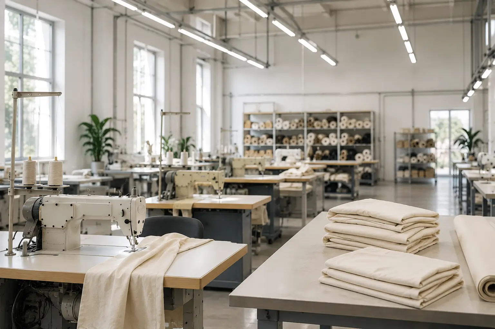

Low MOQ
Orders can start from 25 pieces per style, useful for testing drops before scaling inventory.

Fabricly helps clothing brands move from first inquiry to finished garments with clear communication, practical minimums, sampling guidance, and export-ready production support from Pakistan.
Choosing a manufacturer is difficult when you are testing products, building a first drop, or comparing suppliers overseas. Fabricly is built for buyers who want direct answers about MOQ, sampling, fabric options, branding, timelines, payment, and shipment before committing.
We keep the process practical: understand the product, confirm workable specs, guide sample decisions, then move into production only when the details are clear.
Quality is not one promise. It is a chain of small decisions made before, during, and after production.
Orders can start from 25 pieces per style, useful for testing drops before scaling inventory.
Fit, fabric, decoration, labels, and finishing should be approved before bulk production begins.
WhatsApp-first support helps buyers clarify details quickly instead of waiting days for basic answers.
FOB Karachi, Pakistan origin, DHL, FedEx, and handover expectations are discussed before shipment.
Fabricly is led with a simple goal: make custom apparel manufacturing easier to understand for international buyers. That means honest guidance, written terms, direct production discussion, and practical support for first-time and growing brands.
You can ask about fabric, MOQ, sample cost, shipping, branding, and order planning before deciding whether Fabricly is the right fit.